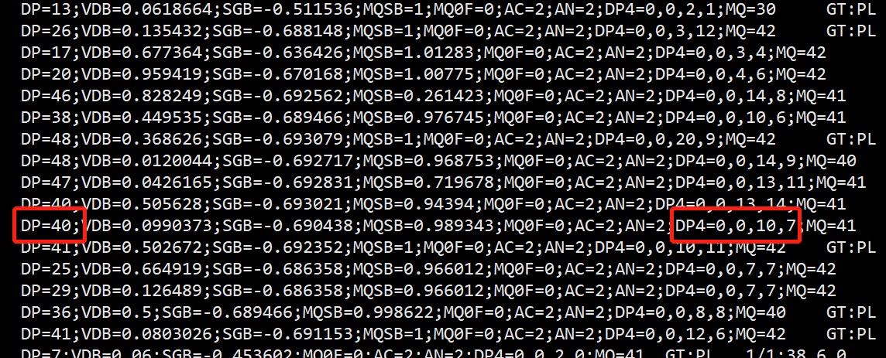
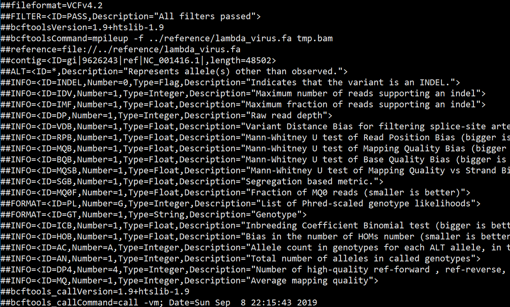
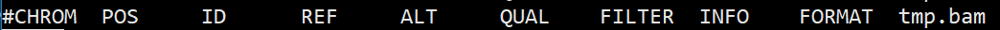
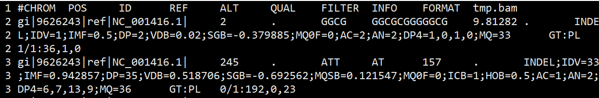

Linux --vcf格式文件处理
vcf
What is a VCF and how should I interpret it?
VCF stands for Variant Call Format. It is a standardized text file format for representing SNP, indel, and structural variation calls.
A valid VCF file is composed of two main parts: the header, and the variant call records.
The header contains information about the dataset and relevant reference sources (e.g. the organism, genome build version etc.), as well as definitions of all the annotations used to qualify and quantify the properties of the variant calls contained in the VCF file.
For each site record, the information is structured into columns (also called fields) as follows:
CHROM POS ID REF ALT QUAL FILTER INFO FORMAT NA12878 [other samples…]
1 | mkdir -p ~/biosoft |
1 | wget https://sourceforge.net/projects/bowtie-bio/files/bowtie2/2.3.4.3/bowtie2-2.3.4.3-linux-x86_64.zip |
小练习
1.把突变记录的vcf文件区分成 INDEL和SNP条目
1 | less tmp.vcf|grep -v "^#"|grep INDEL|less -S |
或者根据SNP第四列和第五列都只有一个字符，否则是INDEL
1 | $ less tmp.vcf | grep -v '^#'| awk '{if(length($4)!=1) print}' | less -S |
人类基因组上的变异主要分为三大类：1. 单核苷酸变异，（通常称为单核苷酸多态性，通俗的说法就是单个DNA碱基的不同，简称SNP）；2. 小的Indel（Insertion 和 Deletion的简），指的是在基因组的某个位置上所发生的小片段序列的插入或者删除，其长度通常在50bp以下（这个长度范围的变异可以利用Smith-Waterman 的比对算法来获得）；3. 大的结构性变异，这种类型比较多，包括长度在50bp以上的长片段序列的插入或者删除、染色体倒位，染色体内部或染色体之间的序列易位，拷贝数变异，以及一些形式更为复杂的变异。为了和SNP变异作区分，第2和第3类变异通常也被称为基因组结构性变异（Structural variation，简称SV）。
2.统计INDEL和SNP条目的各自的平均测序深度
1 | # indel |
3.把INDEL条目再区分成insertion和deletion情况
insertion，第5列比第4列字符数多；deletion，那么第5列比第4列字符数少
1 | # insertion |
该文件明显deletion多得多
4.统计SNP条目的突变组合分布频率
1 | $ less tmp.vcf | grep -v '^#'| grep -v INDEL | cut -f 4,5 | sort | uniq -c |
SNP行的第4、5列分别表示参考基因和研究对象的碱基类型
5.找到基因型不是 1/1 的条目，个数
1 | $ grep -n --color 1/1 tmp.vcf |
6.筛选测序深度大于20的条目
1 | $ grep -v '^#' tmp.vcf| grep -v "DP=[1-20]"| less -S |
7.筛选变异位点质量值大于30的条目
质量值在第6列
1 | $ grep -v '^#' tmp.vcf| awk '{if($6>30)print}'| less -S |
8.组合筛选变异位点质量值大于30并且深度大于20的条目
1 | $ grep -v '^#' tmp.vcf| awk '{if($6>30)print}'| grep -v "DP=[1-20]"| less -S |
9.理解DP4=4,7,11,18 这样的字段，就是 Number of high-quality ref-forward , ref-reverse, alt-forward and alt-reverse bases 计算每个变异位点的 AF
DP4的话放到IGV看一下就知道。reads有正反，然后还有跟参考基因组相同和不相同的，还有正向相同、正向相反、反向相同、反向相反，就是DP4。如果DP4比例失衡，蕴含变异。
DP4: number of high-quality ref-forward bases, ref-reverse, alt-forward and alt-reverse bases
The definition for “DP” in the INFO column is “raw read depth”; “DP4” in the INFO column is a breakdown of “high quality bases”. The sum of “DP4” bases from the INFO column should be equal to the sum of “DP” values from the genotype fields for all individuals, and, obviously, this will be less than or equal to the “raw read depth” by the number of NOT “high quality” bases.
1 | $ grep -v '^#' tmp.vcf| cut -f 8|grep -Eo 'DP4=[0-9]+,[0-9]+,[0-9]+,[0-9]+'| cut -d = -f 2| awk -F ',' '{print ($3+$4)/($1+$2+$3+$4)}'| less -S |
问题：为什么SNP的DP4四个加起来小于DP呢？

10.在前面步骤的bam文件里面找到这个vcf文件的某一个突变位点的测序深度表明的那些reads，并且在IGV里面可视化bam和vcf定位到该变异位点。
概念题
1.vcf的全称是什么？是用来记录什么信息的标准格式的文本？
VCF：Variant Call Format，表示基因组的SNP, INDEL和SV变异信息。
2.一般选用哪个指令查看vcf文件，为什么不用vim?
less -SN，vim可以对文本进行编辑，有误操作文件的风险，且不能单行显示。
3.vcf文件以’##’开头的是什么信息？请认真查看这些信息。’#’开头的是什么信息？
- 以##开头：mate-information line，格式为key=value。
fileformat是必须的字段，表明VCF格式的版本，其他行主要用来描述INFO, FORMAT, FILTER等字段的具体含义。

- 以#开头：heaher line，只有一行，行内以
\t分隔，是下方具体信息的表头。

VCF is a text file format (most likely stored in a compressed manner). It contains meta-information lines, a header line, and then data lines each containing information about a position in the genome.
4.vcf文件除头信息，每行有多少列，请详细叙述每列的含义！请准确记忆。

参考必须要理解vcf格式记录的变异位点信息
必有的是8列，一般有9列，最后可能会有样本的名称本就是10列
- CHROM：参考序列名。
- POS：variant的位置；如果是INDEL的话，位置是INDEL的第一个碱基位置。起始位置为1。
- ID：variant的ID。比如在dbSNP中有该SNP的id，则会在此行给出rs号；若没有，则用
.表示其为一个novel variant。 - REF：参考基因组上的碱基。
- ALT：Variant的碱基。
- QUAL：Phred格式(Phred_scaled)的质量值，Phred值 $= -10 log_{10} p $为variant存在的概率。该值越高，为真实的变异位点的概率越大。通过计算公式可以看出值为10的表示错误概率$p=0.1$，则该位点为variant的概率为90%。
- FILTER：使用上一个QUAL值来进行过滤的话，是不够的。GATK能使用其它的方法来进行过滤，过滤结果中通过则该值为”PASS”;若variant不可靠，则该项不为”PASS”或”.”。
- INFO：额外的信息，具体的含义可以查看mate-information line 中对INFO 字段的描述，看上去是一列，但其中的内容可以无限扩增。
- FORMAT：表头的##FORMAT就是对第九列的解释，主要包括某一个特定位点基因型、测序深度的表述。
5.理解format列和样本列的对应关系以及GT AD DP的含义。
format列例如：GT:PL 2 1/1:36,1,0
两列内容是对应的，前者为格式，后者为格式对应的数据。
- GT：样品的基因型（genotype）。两个数字中间用’/“分 开，这两个数字表示双倍体的sample的基因型。0 表示样品中有ref的allele； 1 表示样品中variant的allele； 2表示有第二个variant的allele。因此： 0/0 表示sample中该位点为纯合的，和ref一致； 0/1 表示sample中该位点为杂合的，有ref和variant两个基因型； 1/1 表示sample中该位点为纯合的，和variant一致。
- PL：指定的三种基因型的质量值(provieds the likelihoods of the given genotypes)。这三种指定的基因型为(0/0,0/1,1/1)，这三种基因型的概率总和为1。和之前不一致，该值越大，表明为该种基因型的可能性越小。 Phred值 $= -10 * log (p) $，其中p为基因型存在的概率。
- AD 和 DP：AD(Allele Depth)为sample中每一种allele的reads覆盖度,在diploid中则是用逗号分割的两个值，前者对应ref基因型，后者对应variant基因型； DP（Depth）为sample中该位点的覆盖度。
6.vcf文件第三列如果不是’.’，出现的rs号的id是什么？
变异位点名称，对应dbSNP数据库中的ID
7.vcf文件的ref，alt列和样本列的0/1、1/1 或者1/2的联系？
0/0表示sample中该位点为纯合位点，和REF的碱基类型一致
0/1表示sample中该位点为杂合突变，有REF和ALT两个基因型（部分碱基和REF碱基类型一致，部分碱基和ALT碱基类型一致）
1/1表示sample中该位点为纯合突变，总体突变类型和ALT碱基类型一致
1/2表示sample中该位点为杂合突变，有ALT1和ALT2两个基因型（部分和ALT1碱基类型一致，部分和ALT2碱基类型一致）
8.vcf文件一般用什么软件生成？请至少说出两个软件。请注意不同软件生成的vcf格式的稍有不同的地方。
GATK和bcftools，不同之处主要在mate-information line部分
9.Vcf文件一般都比较大，压缩后的.gz文件用什么指令直接查看而不用解压后查看？
zless zcat
10.了解gvcf是什么格式，gvcf全称是什么？他与vcf有什么前后联系？
What is a GVCF and how is it different from a ‘regular’ VCF?
GVCF stands for Genomic VCF. A GVCF is a kind of VCF, so the basic format specification is the same as for a regular VCF (see the spec documentation here), but a Genomic VCF contains extra information.
The key difference between a regular VCF and a gVCF is that the gVCF has records for all sites, whether there is a variant call there or not.
11.把alt列出现.的行提取出来
1 | $ grep -v "^#" tmp.vcf |awk '{if($5 ~".")print}'|head |
12.请将chrid、postion、ref、alt、format、样本列切割出来生成一个文本
1 | $ grep -v "^#" tmp.vcf|cut -f 1,2,4,5,9 > tmp.cut.txt |
13.将一个含snp，indel信息的vcf拆成一个只含snp，一个只含indel信息的2个vcf文件。可借鉴软件
1 | $ grep -v "^#" tmp.vcf|grep INDEL>indel.vcf |
14.用指令操作indel的vcf文件，提取indel长度>4的变异行数，存成一个文本。
1 | awk '{if(length($5)>4)print}' indel.vcf > indel.new.txt |
15.用vcftools过滤vcf文件，如maf设置成0.05， depth设置成5-20，统计过滤前后的变异位点的总个数
1 | $ vcftools --vcf tmp.vcf --maf 0.05 --minDP 5 --maxDP 20 --recode --out tmpout.vcf |
16.利用vcftools提取每个样本每一个位点的变异信息和深度信息，生成一个矩阵的文件，至少含chrid，postion，sample_DP，sample_GT四项信息
17.提取出变异位点上样本有纯和突变的行数
1 | $ grep 1/1 tmp.vcf |wc -l |
18.统计一下1号染色体上的变异总个数。
示例文件的序列全部在一条染色体上。
19.提取一下BRCA1基因上发生变异的行数，如果是人类wes变异结果文件
20.统计vcf文件各样本的缺失率，如果是多个样本的群体call结果。